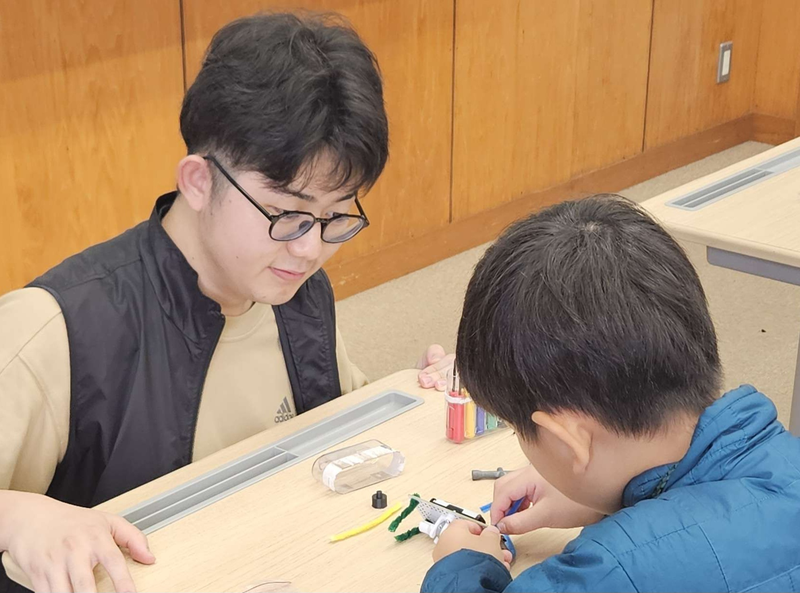
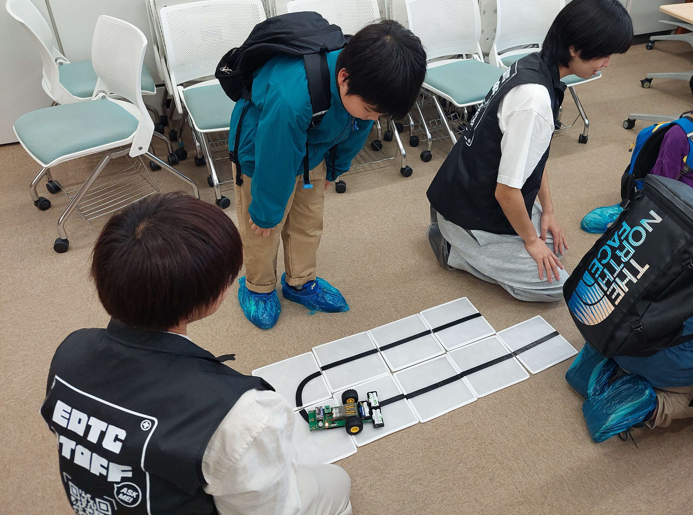
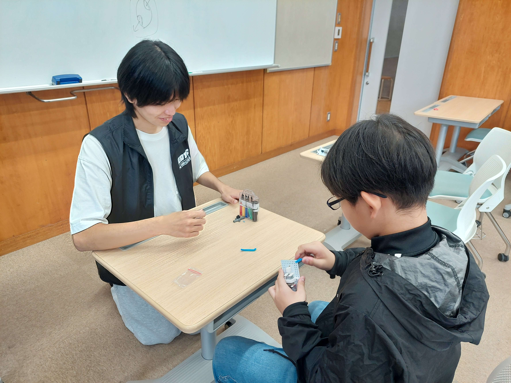

KAIT EDTCの山口です！
この度は藤嶺学園藤沢中学校様が開催されている
「第96回藤嶺祭」にご招待いただき、出展させていただきました！


今年度は、今までEDTCで開発してきたプロダクトを展示し、子供たちに体験してもらいました！
体験してくれた子供たちのなかには、
熱中してライントレースカーの線路作りに没頭する姿が見られ、とても嬉しく感じました！
そして、、、
ぶるぶる君の出張授業も同時に行いました！
ぶるぶる君の授業では子供たちにぶるぶる君の足のモール部分を組み立ててもらい、遊びながら振動の仕組みを勉強！
ぶるぶる君の授業も大好評で沢山の中高生の方が受講してくれました！

今回藤嶺祭という中高生が主体となって運営されているお祭りに出展させていただき、
彼らが自分たちで考え、工夫しながら作り上げたブースや出展に肩を並べてこの催事を盛り上げる一員として
参加できたことをとても光栄に思います！
今回の経験を活かして、これからも子供たちに楽しんでもらえるプロダクトを開発していきたいと思います！